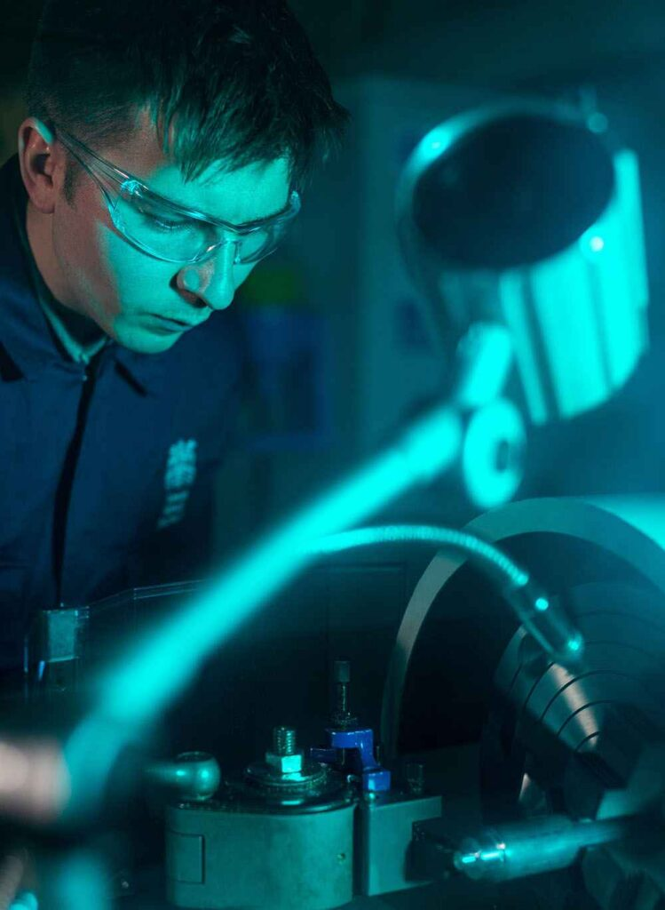

Relocating to a new country and adjusting to a different lifestyle can be challenging, especially in a professional setting where work styles and time management may vary. Understanding the work culture, building relationships with colleagues, and adapting to industry-specific practices are crucial, particularly in professional fields.
Wouldn’t it be beneficial to gain firsthand experience of working in an authentic Australian work environment?
This is where the Professional Year course can make a significant difference. If you’re a graduate in the fields of Accounting, IT, or Engineering, you have the opportunity to participate in this program. Our experienced team can guide you through the enrollment process for the Professional Year program offered by top providers in Australia.
The Professional Year course enables graduates to gain exposure to working in an Australian work environment, enhancing their confidence, communication skills, and other essential work-related competencies.
Our Partners in Professional Year (PY) Courses

Our Professional Year course partners have devised practical and unique methods to assist our clients. Drawing from our team’s extensive experience, we help our clients select the right provider based on their individual needs and career aspirations.
Having nurtured long-term and successful relationships with our partners, we can offer higher value than our competitors by passing on additional benefits to our clients.
We have assisted over 10,000 clients in enrolling in the PY course.
Engineering graduates who have completed their degree at a recognised institution outside Australia can also join the Professional Year Program in engineering if they hold a Subclass 476 Skilled – Recognised Graduate visa.
Benefits of the Professional Year Course in Australia
Professional Year Courses are designed to specifically enhance the employability of international graduates who aspire to work in Australia. These courses facilitate a smooth transition from student life to the professional world.
Each course focuses on improving students’ business communication skills and adapting to the Australian business culture and environment.
Completing the Professional Year Course offers several advantages:
- You can claim five migration points toward your permanent residency application.
- You gain access to an industry-relevant internship placement tailored to your career field.
- The program enhances career prospects within your area of education.
- It provides opportunities to network with industry professionals and peers.
- You may be able to secure a white-collar job in an Australian company.
Eligibility for a Professional Year Program in Australia
The Professional Year course is a 44-week program with a 12-week internship component. The eligibility requirements for each PY course are as follows:
Professional Year in Australia, INFORMATION TECHNOLOGY (ACS)
- Completion of a recognized IT degree in Australia (Bachelors or Masters)
- Obtain or apply for a Graduate Visa (subclass 485) with a minimum 12 months of validity
- A valid minimum PTE-A score of 50 with no less than 50 in each band, or an IELTS score (valid for 3 years) of 6.0 with no less than 6.0 in all four competencies, or equivalent
Professional Year in Australia, ACCOUNTING (SMIPA)
- Completion of a recognized Accounting degree in Australia (Bachelors or Masters)
- Obtain or apply for a Graduate Visa (subclass 485) with a minimum 12 months of validity
- A valid minimum PTE-A overall score of 50 with no band less than 50, or an IELTS score (valid for 3 years) of 6.0 with no less than 6.0 in all four competencies, or equivalent
Professional Year in Australia, ENGINEERING (EEA)

- Attainment of a recognized bachelor or master qualification in Engineering from an Australian institution. For Subclass 476 visa holders, a relevant Australian qualification is not required.
- IELTS overall score of 6.0 with no less than 5.0 in any component or PTE-A overall score of 50 with no band less than 36, or equivalent.
- Bridging Visa (485) or a skilled graduate temporary visa (subclass 485)
- Hold a Migration Skills Assessment outcome letter from Engineers Australia.